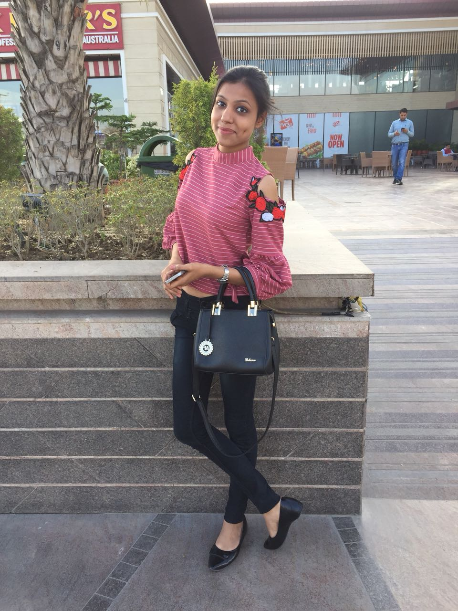

 ABOUT 'JOURNEY WITH FOODGASM'
"People who love to eat are always the best people" - Julia Child.
Hii,this is Sheenam Gulati,raised by a home-maker mother, who makes delicious and nutritious meals, day after day, I learnt to appreciate early in life, the joys of a well-pampered palate.My mother has a habit of collecting recipe books and watching cookery shows and I love to experiment those recipes in my own ways.
Experimenting with food cuisines and food cultures becomes like passion to me as I truly believe food connects people more than love and food promotes love and companionship.There is no other love purer than for food" and thats what makes "Journey With Foodgasm" believe in KEEP HOGGIN' ... KEEP BLOGGIN'.
Reach out to me via email 'sheenamgulati07@gmail.com'.
Home